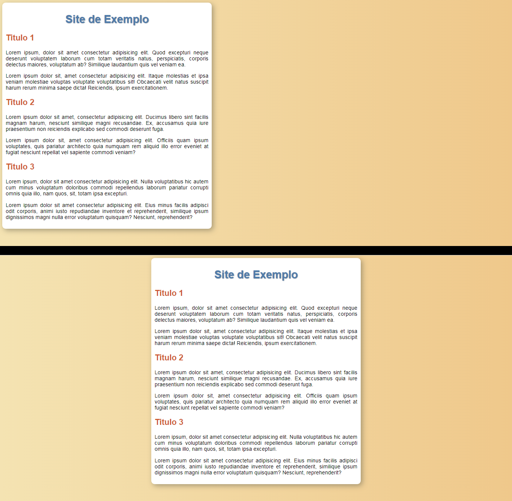

Curso HTML e CSS
Modulo 2
Psicologia das CORES
As cores são de suma importancia para tudo na vida. A compra de um produto está intrinsecamente ligada a cor dele e da embalagem. A harmonia visual de um site (harmonia de cores) vai decidir se você vai acessa-lo ou não e nada disso é conciente.
Cada cor remete a alguma coisa. Por exemplo o azul é uma cor que remete a competencia, sabedoria, calma, confiança, profissionalismo, integridade e segurança. Alem disso é a cor com menor taxa de rejeição. 45% das pessoas gostam do azul e apenas 1% odeia o azul. É usada por muitas empresas. Ex: facebook, dell, twitter, linkedin e intel.
O vermelho remete ao amor, emoção, energia, mas também remete a raiva, perigo. Deve ser usado em sites de comida, moda, entreterimento serviço de emergencia e saude. Ao mesmo tempo deve ser evitado para produtos que querem remeter ao luxo, natureza e serviços em geral
Fundo preto e letra branca causa um cansaço visual muito rapido. Logo, pode ser usado mas não quando se tem muito texto. Para muito texto é melhor usar o fundo branco com letra preta
Quanto mais é usado a cor mais se intensifica a psicologia das cores. Pequenos detalhes como a cor das roupas das pessoas que ficam em uma imagem do site fazem diferença, Remetem a diferentes emoções.
Cada item ter suas cores fazem os produtos parecerem unicos e transmitirem diferentes emoções. Cada pessoa vai se identificar com um produto diferente dependendo de suas cores favoritas.
Tabela da psicologia das cores:
Como representar todas as cores
No VSCode pode-se escrever as cores de 4 formas:
- Pelo Nome
(Ex: blue, darkred, white) - Pelo Codigo HexaDecimal
(Ex: #0000ff , #ffffff) - Pelo rgb (Red, Green, Blue)
(Ex: rgb(0, 0, 255) , rgb(0, 0, 0) - Pelo hsl (Hue, Saturation, Luminosity)
(Ex: hsl(240, 100%, 50%) , hsl (0, 0%, 100%)
Codigo Hexadecimal
O codigo decimal tem 10 algarismos: 1, 2, 3, 4, 5, 6, 7, 8 e 9.
Enquanto o codigo hexa-decimal tem 16: 1, 2, 3, 4, 5, 6, 7, 8, 9, A, B, C, D, E e F. Sendo o "0" o menos significativo e o "F" o mais significativo. (Hexa = 6 + Decimal = 10)
O codigo hexadecimal se baseia nas 3 cores primarias (vermelho, verde e azul) - começa com "#" e depois o codigo da cor de 6 digitos. (Ex: #a50bd2) Os 2 primeiros algarismos são referentes ao vermelho, os 2 do meio referem ao verde e os 2 ultimos ao azul.
RGB
O RGB (red, green, blue) funciona como o hexadecimal, mas com valores de 0 a 255. Logo, para representar o azul ficaria 0, 0, 255. A sequencia é a mesma: o primeiro "0" refere ao vermelho, o segundo "0" refere ao verde e o ultimo "0" refere ao azul.
O RGB é usado em TVs, celulares, notebooks, etc. (O preto (ausensia de cor) = 0, 0, 0 Enquanto o branco = 255, 255, 255)
HSL
O HSL (Hue, Saturation e Luminosity) funciona definindo a matiz (cor) (de 0 a 360), a saturação (de 0% a 100%) e luminosidade (de 0% a 100%)
- A matiz é o grau da cor - 0 = vermelho | 120 = verde | 240 = azul
- A saturação é percentual - 0% = cinza | 100% = cor total
- A luminosidade é percentual - 0% = preto | 100% = branco
Mas a maneira mais simples é usando o menu interativo do VSCode para escolher a cor atraves do menu. Basta colocar o mouse sobre qualquer cor que o menu vai aparecer. Ao clicar na barra superior onde tem "rgb" ele muda para 3 opções: hexadecimal, hsl ou rgb.
Menu Interativo do VSCode
O menu interativo tem 3 opções: tom (tela maior), transparencia (barra do meio) e cor (barra a direita)
Harmonia de Cores
Circulo Cromatico
➡ É dividido em 12 principais cores:
➡ É usado para harmonizar as cores (deixar bonito e ter simetria)
- Cores Primarias = Amarelo, Vermelho e Azul (são simetricas, formam um triangulo equilatero)
- Cores Secunarias = Laranja, Violeta e Verde (forma um triangulo também, mas invertido e equilatero)
Cores Terciárias = mistura entre todas as cores primarias e secundarias (esta ENTRE uma cor primaria e secundaria)
➡ Quando se vai juntar duas cores junta-se o nome das duas (primeiro a primaria e depois a secundaria). As principais cores terciarias são:- Amarelo-Esverdeado
- Amarelo-Alaranjado
- Vermelho-Alaranjado
- Vermelho-Arroxeado
- Azul-Arroxeado
- Azul-Esverdeado
Temperatura das cores
Cores Frias ➡ do violelta ao amarelo-esverdeado
- Violeta
- Azul-Arroxeado
- Azul
- Azul-Esverdeado
- Verde
- Amarelo-Esverdeado
Cores Quentes - do amarelo ao vermelho-arroxeado
- Amarelo
- Amarelo-Alaranjado
- Laranja
- Vermelho-Alaranjado
- Vermelho
- Vermelho-Arroxeado
Classificação Buscando a Harmonia
Quando se esta montando um site tome cuidado com a escolha da paleta de cores. Uma paleta deve ter de 3 a 5 cores (melhor é 4) + branco e preto.
Se o site tem uma marca (logo) ache a cor primaria da marca e use-a no site.
- Cores Complementares = Tem mais contraste entre sí (cores opostas) Ex: violeta e amarelo
- Cores Análogas = Cores que não tem constraste tão grande, mas é perceptivel.(são as cores vizinhas)
Ex: violeta e azul arroxeado
Na criação do site deve-se usar cores analogas e complementares para definir sua paleta de cores.
Ex: violeta (principal), azul-arroxeado, vermelho-arroxeado (complementares) e amarelo (análoga)
- Cores Análogas Relacionadas = duas cores complementares + pula uma e pega a proxima
Ex: amarelo, amarelo-alaranjado e vermelho (pulou o vermelho-alaranjado) - Cores Intercaladas = pula uma cor.
Ex: amarelo, laranja e vermelho (pulou o amarelo-alaranjado e o vermelho-alaranjado) - Cores Triádicas = pula 3 cores (forma um triangulo).
Ex: amarelo, vermelho e azul - Cores em Quadrado = pula duas cores (forma um quadrado).
Ex: amarelo, vermelho-alaranjdado, violeta e azul-esverdeado - Cores Tetrádicas = escolhe duas cores e suas complmentares (vai formar uma figura de quatro lados)
Ex: verde e vermelho + laranja e azul - Monocromia = escolhe uma cor e altera sua saturação e seu brilho para formar outras cores. Muito harmonico. Para trabalhar monocromia sempre arraste pra baixo (no menu do VSCode) para manter a cor e mudar o tom
Ex: laranja - vai formar tons de laranja( laranja, laranja escuro, marrom claro e marrom escuro )
Ferramentas de cores e paletas
Adobe Color
Acesse o site color.adobe.com - Site para escolher as cores no circulo cromatico (para as paletas), da os codigos hexadecimais das cores. Você escolhe a classificação e vai mexendo nas cores para definir as paletas.
Tem a opção extrair tema para pegar a paleta conforme as cores de arquivos. Depois de pegar a paleta, pode-se voltar ao disco de cores para escolher outras cores com base na classificação das cores da imagem que foi extraido. Se você quiser extrair degrade pode ir em extrair gradiente para pegar o degadre baseado nas cores
Para conseguir uma sugestão de paleta vai em explorar ➡ exibir ➡ temas de cores ➡ mais usados, para mostras as paletas mais utilizadas dai você escolhe a que mais gostou, clica nela e clica em cima de cada cor para copiar o hexadecimal delas. Para copiar em todos os formatos de representação de cores é só clicar em copiar como css (vai gerar em rgb, hsl e hexadecimal). Também pode ir em tendencias para buscar inspirações (ele mostra fotos com as paletas)
Paletton
Acesse o site paletton.com paletton.com - Nele, se clicar em examples ele vai mostrar como ficaria emm um site na web com essas cores (podendo colocar a cor de fundo branca ou preta) + aplicando as cores a alguns desenhos e animações para ver o contraste
Coolors
Acesse o site coolors.co coolors.co - nele você consegue gerar paletas de modo aleatorio apertando o espaço. Você pode travar uma cor (clicando no cadeado) para que o algoritmo gere paletas com essa cor
➡ É mais pra quem está perdido
Como extrair uma cor
Para extrair uma cor usaremos uma extensão chamada Colorzilla
Para usar o colorzilla basta clicar no icone da extensão ➡ page-color. Conforme você passa pelas cores o identificador mostrará o hexadecimal dela. Para pegar basta clicar na cor que o codigo hexadecimal dela será copiado. Além de sites da pra pegar cores de PDFs, basta abri-lo no navegador.
Degrade e Gradiente
Para fazer degrade usa-se a propriedade background-image: linear-gradient(direção + primeira cor + segunda cor); (no style)
Ex por direção ➡ background-image: linear-gradient (to right, white, blue); - é mais limitado (4 direções)
Ex por graus ➡ background-image: linear-gradient (90deg, white, blue); - (360 direções)
É possível fazer o gradiente com a "cor" transparente usando "transparent" no "color"
As 4 direções são: top (cima) | bottom (baixo) | left (esquerda) | right (direita).
Já as direções em graus vão de 0deg a 359deg
Exemplo de degrade / gradiente (neste caso aplicado a um paragrafo com <br> [maneira incorreta]):
O degrade não precisa ser gritante (não exagere). Pode-se adicionar quantas cores quiser no gradiente. É possivel definir a porcentagem que cada uma das cores ocupará, basta colocar a porcentagem após a cor - Ex: #941C2F 20%, #0E34A0. Para que o degadre seja aplicado na tela inteira usa-se a propriedade background-attachment: fixed; . Também pode-se criar gradientes em outros formatos - Ex: em circulo - background-image: radial-gradient(circle, #FF92C2, #1CFEBA, #FF47DA, #0E34A0, #941C2F);
Diferença de um site com HTML puro e com CSS
Estudo Básico da Tipografia
A tipografia surgiu pela necessidade de criar letras menores e mais bonitinhas para melhorar a legibilidade.
Tipografia- Typos (impresão [colocar coisa no papel])
- Graphia (escrita [como escrever])
- Estudo dos tipos (tipografia) - como desenhar as letrinhas
- Tipo = como vou desenhar cada uma das letras
- Os tipos (assim como as cores) transmitem emoções
O designer deve se preocupar com boas letras, boas cores e boas imagens. Por exemplo, a palavra "Amor" esta relacionada a coisas suaves, delicadas, duradores, logo, é melhor um traço mais fino, suave. As palavras indicam emoções e este pode ser reforçado com um bom uso de tipografia (fonte).
Anatomia do tipo
A letra "x" é o ponto de partida para construção de todas as fontes. Pois a altura do "x" é a base da altura de todas as letras minusculas. Altura das minusculas = altura-x
- Altura do vazamento pra cima (ex: b, k) = altura ascendente
- Altura do vazamento pra baixo (ex: g, Q) = altura descendete
- Somatorio de todas as alturas = altura do corpo
O prolongamento que existem em algumas fontes serifa (pequeno tracinho no as pontas das letras) - serve para guiar o olho, facilita a leitura das palavras
Quando lemos não lemos letra por letra, vemos a primeira e ultima letra e as que estão dentro não precisam estar em ordem.
Componentes Anatomicos Geometricos
- Letras Sereifadas = letras com pontas para guiar a leitura
- Haste = segmento reto na vertical
- Filete = haste deitada que une dois componentes
- Arco = barriguinha que une duas hastes
- Esporão = saltinho (triangulo) para segurar a base e não cair
- Vertice = o ponto oposto mais afastado da base de uma figura
- Terminal = elemento que não esta preso
- Braço = sai da haste e vai pra cima
- Perna = sai do braço ou haste e vai pra baixo
- Pé = base que segura a fonte
- Espinha = curva em s
- Barriga = dois arcos que se unem e formam a barriga
- Olho = area interna da letra
- Orelha = parte de cima
- Cauda = parte descedente da letra
- Glifo = uma das letras da fonte = caractere ou letra
- Fonte = conjunto de glifos
Familia Tipografica = varios glifos com diferentes densidades: light, normal, seminegrito, negrito e extranegrito. Nem todas as fontes tem light, seminegrito e extranegrito, mas tem pelo menos normal e negrito.

Escritas serifadas são melhores para midias impressas (livros, jornais, etc.). Para midias digitais o melhor é o sans-serif (sem serifa)
Demais Categorias de Fontes
- Seridadas = Com serifa
- Sans-Serif = Sem serifa
- Monoespaçada = Todas as letras tem o mesmo espaçamento (inclusive espaço , e !
- Handwriting (scriptada) = Tenta simular a escritura a mão
- Display/Comemorativa = Levam a alguma ideia ou filme
Para leitura nunca use cores não contrastantes, é fundo branco letra preta (ainda mais para leituras longas. Para leituras breves até da pra usar um fundo preto e letra branca, mas para textos longos não). Cuidado com espaço entre letras muito curtos.
Fontes
Para mudar a fonte usa-se o parametro font-family. Para fontes com dois nomes deve-se escrever entre ' ' - Ex: 'Courier New' . Alguns dispositivos especificos não tem algumas fontes (mesmo sendo fontes basicas/famosas) para resolver isso basta adiocionar só a caracteristica da fonte. Ex: sans-serif (ele pegará qualquer fonte que seja sem serifa que o dispositivo tenha)
Deve-se criar uma combinação de fonte segura, ou seja, uma combinação de fontes que vão funcionar em praticamente todos os navegadores ou dispositivos. Pode-se adicionar quantas quiser, o navegador vai tentar a primeira opção depois passa pra proxima. Então deve-se seguir a ordem de preferencia.
Para adicionar o tamanho da fonte usa-se o parametro font-size
As medidas do font-size podem ser ABSOLUTAS ou RELATIVAS
Medidas Absolutas- cm, in ,mm, in, px, pt, pc
- ➡ mm e cm e in (inches) são dificeis de trabalhar porque cada dispositivo vai entender de um jeito diferente.
- ➡ px (pixel) em alguns dispositivos com tela retina, 1px = 1/4 de px. Então também é dificil de usar.
- ➡ pt e pc são medidas da tipografia (papel) logo, não se recomenda usar em telas
- em, ex, rem, vw, vh, %
- ➡ em = altura de "m" (maiusculo) de uma letra. Pode-se colocar valores inteiros 1em, 2em ou valores quebrados 1.2em 2.9em. É o mais usado
- ➡ ex = altura "x" = equivalente ao x (minusculo) de uma letra. Assim como o em aceita valores inteiros e quebrados
No entando, a recomendação oficial da linguagem fala pra usar SOMENTE o "em" e o "px" (pixel)
Observações- Não pode ter espaço entre a medida e o numero. Ex: 10px (certo) | 10 pc (errado)
- Numeros quebrados devem ter "." e não ",". Ex: 0.5
Normalmente o tamanho padrão da fonte em pixels é 16px (= 1em)
O melhor é usar o "em" pois, você usa porcentagem do tamanho padrão. Assim, viabiliza criar sources para multiplataformas (tv, celular, etc.)
Peso e Estilo
Peso da fonte = quando faz a fonte ficar mais magrinha ou mais gordinha. Nem todas as fontes tem os 5 pesos, a maioria tem normal e negrito.
Para alterar o peso da fonte usa-se o parametro font-weight.
Os valores podem ser: Lighter, Normal, Bold e Bolder.
Também pode-se usar valores numerios de 100 a 900 (de 100 em 100) garantindo maior precisão. Tudo vai depender se a fonte oferece esses pesos. O 100 é menos que o lighter e o 900 é mais que o extrabold
Tem também o font-style para definir se fica em italico ou normal
Para deixar sublinhado usa-se a tag text-decoration: underline;
o que mais vai ser usado é o font-family, font-weight, font-size e font-style. É possivel condensa-los em um só parametro chamado de font. Essa condensação é chamada de shorthand (mãozinha). A ordem do font é: font-style ➡ font-weight ➡ font-size ➡ font-family (deve respeitar a ordem)
Ex: font: italic bolder 3em 'Work Sans', sans-serif; (a "," só é usada para colocar varias fontes).
Familias de Fonte Externas
O que ja vem embutido nos navegadores são fontes muito limitadas. Para usar fontes mais versateis podemos usar fontes externas puxando de sites.
o site https://fonts.google.com/ serve para pegar fontes. Pode-se filtrar em serif, sans-serif, monoespaçada, etc.
Para pegar a fonte do Google Fonts, pode fazer o download e puxar o arquivo para o HTML ou puxar externamente (server) em "select this style". Ele abre uma janela que se minimiza no canto superior direito. Para pegar a referencia copie o codigo do "import". O import entra como uma regra, portanto, deve ser escrito na primeira linha do style, sem precedentes (só pode ser precedido de regras). Normalmente é usado 3 tipos de fontes para compor as fontes de segurança.
Para diferentes pesos precisará adicionar as variações da mesma fonte ao codigo de incorporação ao HTML. Ele adicionará no mesmo codigo sem ocupar muitas linhas.
Ex:
@import url('https://fonts.googleapis.com/css2?family=Kaushan+Script&display=swap'); - uma só variação@import url('https://fonts.googleapis.com/css2?family=Work+Sans:ital,wght@0,100;0,200;&display=swap'); - algumas variaçõesPode dar mais de um import no style, mas, para evitar isso é possível condensar varias fontes com diversas variações cada uma em apenas um import. Basta no Google Fonts ir adicionando as fontes e quando adicionar todas que for usar pegar o codigo do import.
Familias de Fontes Internas
Pegue o arquivo da fonte. Tem muitos sites que disponibilizam. Ex: dafont.com. Bastar baixar o arquivo e colocar na pasta do projeto (sempre organize os arquivos certinho no projeto para manejar mais facilmente)
Na escolha da fonte fique atento aos glifos para não pegar uma fonte que não tenha glifos com acentuação, pois não vai conseguir usar em portugues. Algumas também não diferenciam maiusculos e minusculos. Elas podem ter o formato .otf e .ttf ambos servem melhor a diferentes tipos de navegadores, use ambos com sources.
Para adicionar a fonte você vai criar uma regra com um seletor especial: @font-face para setar a fonte ao HTML. Ele vai abrir assim:
@font-face {
font-family: 'blank-river';
src: url('blank-river.ttf') format('truetype');O format não abre direto, você tem que adicionar manualmente. O valor vai depender do formato do arquivo, se for otf vai ser opentype. Se fot ttf vai ser truetype (essa cllassificação pode mudar em situações muito especificas. Por regra é assim Além delas tem embedded ➡ opentype e truetype-aat ➡ apple advanced typography.p
O valor do font-family é o nome que a fonte terá, é com esse nome que você vai fazer a referencia para usar nos seletores. Já o src é a localização do arquivo.
Também deve-se usar o parametro font-wight: normal para determinar o peso da fonte e font-style: normal para definir que é ou não é itálico.
O Google Fonts é uma opção interessante pois deixará o site mais leve, mais esperto.
Como capturar uma fonte
Para capturar uma fonte de um site, usa-se uma extensão do google chrome chamada Fonts Ninja
Para usar, basta clicar no ninja verde. Ele vai listar as fontes que estão sendo usadas e se colocar o mouse em cima ele vai falar se está em negrito ou italico, qual a cor, tamanho, etc. (só funciona para o que está escrito. Textos de imagens não pega) ele também mostra se esta normal, bold, extrabold, etc. O Fonts Ninja é um serviço pago, mas que na versão gratuira ja dá pra pegar as fontes dos sites
Ele tem um menu interativo que, ao escrever, ja pega as caracteristicas do que esta escrito na pagina igual ao que voce escreveu. Com o nome da fonte basta pesquisar no google fonts ou no dafont (um dos dois vai ter, mas se não tiver busque em ou outro site) para achar a fonte e usa-la no seu site
Como identificar fontes dentro de imagens
São 3 sites:- WhatFontIs - www.whatfontis.com/ (É o melhor que tem)
- FontSquirrel.com www.fontsquirrel.com/
- MyFonts.com www.myfonts.com/
No site, você deve escolher uma fonte de cada vez (não vai ser tudo de uma ver como no fonts ninja). Ele vai pedir uma serie de informações para encontrar a fonte. Configure bem o brilho e o contraste pra ficar mais facil de achar a fonte. Para letras que encostam em outras, é possivel trassar uma reta para separar as letras. Depois ele vai pedir pra definir que letras são aquelas, se não conseguir identificar ou repetir as letras, deixe vazio. Ele vai listar as que achou parecidas. Vai aparecer variações muito parecidas.
Cuidado com fontes pagas, use só as gratuitas. São 3 sites para caso não identificado em um, o outro identifique.
Alinhamento de textos
Temos 3 tipos de alinhamento: á esquerda, á direita e centralizado. Por padrão, ficará alinhado a esquerda
O parametro para alinhar o texto é o text-align: .
Os valores podem ser:
- justify (justificado - assim que o texto encostar na borda ele pula pra linha de baixo, não deixando criar barra de rolagem)
- left (á esquerda)
- right (á direira)
- center (ao centro)
- end (no final)
- start (no inicio)
O parametro text-indent: serve pra dar o espacinho do paragrafo. Os valores devem ser em px. Fica bom por volta de 30px.
Seletores Personalizados (id)
Para personalizar somente uma tag , você deve cria uma identificação com a propriedade id="nome"
➡O nome que você quer dar ao seletor especial deve ficar entre aspas no "nome".
➡Para se referir a ele, no CSS, você vai colocar a # seguido pelo nome do id.
Ex: #principal {}
Tudo que for id em HTML é # em CSS e tudo que é class em HTML é . em CSS.
Ex: id="cordefundo" (na tag) ➡ #cordefundo (no style)
Ex: class="subtitulo" (na tag) ➡ .subtitulo (no style)
No, entanto só pode ter um elemento com id (pode ter varios id mas todos de elementos diferentes). Para fazer em varios elementos usamos a class
Classificação de elementos (class)
É como no id, mas é usado para varios elementos. Basta adicionar como parametro class="nome"
Não nomeie suas classes e seus ids pela forma (ex: verde, vermelho) e sim pela função (ex: basico ~ verde)
Na class não precisa definir o tipo da tag, e sim começar com o . direto - Ex: .basico{}
Para trechos que não estão envelopados por tag, pode-se usar a tag <span> só para descriminar e poder aplicar uma class.
Pode-se aplicar mais de uma classe a um elemento. Basta que fiquem separadas por espaços.
Ex: h1 class="intermediario destaque" (está aplicando intermediario e destaque)
Quem sobrepõe quem segue uma hierarquia. Essa hierarquia é definida com base em quem liga por ultimo, a ordem é class > id > seletor padrão. O id sobrepõe o style padrão
Se você quiser criar um estilo apenas para uma tag de uma class você deve, no CSS, colocar o nome da tag seguido de . e a classe (serve para id também, a difernça é que vai ser um # separando o nome da tag e o nome da classe.
Ex: section.normal{ } ➡somente as sections com a class normal terão esse estilo.
Pseudoclasses
Uma <div> é um espaço qualquer (ocupa uma linha inteira). O atributo height define a altura (os valores devem ser em px). A largura é o width (os valores também devem ser em px)
O atributo border serve para criar uma borda. Os valores devem seguir a ordem: tamanho(px) ➡ tipo(solid) ➡ cor(black). border é uma shorthand.
display: inline-block ➡ serve para deixar tudo na mesma linha (alinha as divs horizontalmente) se diminuir a tela uma pula pra linha de baixo (não da pra fazer localmente. Só externo ou na tag style).
Pseudoclasse refere-se ao estado que um elemento está. Fica assim: "tag" ":" "estado" - Ex: div:hover{}.
Para criar a pseudoclasse usa-se : (dois pontos). Pseudoclasse está relacionado ao estado do elemento (se ta ativo, marcado, vazio, habilitado, etc.)
Ex: div:hover (primeiro vem a tag (div), depois a pseudoclasse (:) e por fim o estado (hover))
hover = o que vai acontecer quando passar o mouse em cima . Isso é uma configuração de ESTADO. SÓ vai ficar amarelo SE passar o mouse em cima. Serve para criar animações quando o mouse chegar perto de um elemento
Pode se criar estruturas para definir regras para algo que está dentro de algo.
Ex: div > p{} ➡ esse seletor só vai funcionar para paragrafos que estiverem dentro de uma div.
div:hover > p ➡ Quando eu passar o mouse sobre o div, eu quero que o paragrafo que tem dentro dele faça (comando que esta dentro do seletor)
">" significa filho (dentro de)
display: none; ➡ serve para que não mostre nada
display: block; ➡ serve para mostrar
Exemplo do que pode ser feito com o conteudo acima:
Isso seria o prototipo inicial de casos de menus que abrem quando passa o mouse em cima.
Tudo foi feito no style do head. Os codigos foram os seguintes:
<style>
div{
display: inline-block;
height: 200px;
width: 200px;
background-color: lightgray; border: 1px solid black;
text-align: center;
}
div:hover{
background-color: yellow;
}
</style>
Usando PseudoClasses
links por padrão ficam azuis e quando visitados violeta, porém é possivel mudar isso com CSS. Para fazer isso basta adicionar o parametro color com a cor que queira que o link fique. A pseudoclasse :visited define a cor que fica os links VISITADOS ->
Ex: a:visited {}. Se quiser manter sem diferença os visitados, bastar nao colocar a pseudoclasse visited.
Para tirar o sublinhado dos links usa-se a pseudoclasse text-decoration: none.
Da pra quando passar o mouse deixar negrito, criando um efeito muito legal. basta usar tag:houver { font-weight: bold; }
pseudoclasse :active ➡ vai funcionar quando se clica nele (só fica enquanto esta "clicando")
pseudoelementos
Temos também os pseudoelementos que podem agir nas classes, elementos e ids. Mexem no conteudo periferico do elemento. Para criar pseudoelementos usa-se "::" (dois :)
Ex: a::after { content:' [link]' }
after ➡ serve para o que vem depois. Também tem o before para o que vem antes
content ➡ conteudo. Então ele vai escrever " [link]" depois do que tiver ancora (a)
Ex: para deixar a primeira linha de um paragrafo azul ➡ p::first-line{ color:blue}
Modelo de Caixas
➡ É aplicavel ao HTML e CSS, serve para facilitar a organização do design. Imagine varias caixas, onde umas ficam dentro de outras. Esse é o modelo de caixas. Quando se coloca um elemento dentro do outro esta-se fazendo um aninhamento (em forma de ninho).
Todo elemento visivel de um site é uma caixa. Essa caixa tem um tamanhos e medidas.
Anatomia de uma caixa:- height (altura) ➡ define a altura.
- width (largura) ➡ define a largura.
- border (borda) ➡ linha que circunda o conteudo.
- padding (preenchimento) ➡ espaço interno entre a borda e a linha do conteudo.
- margin (margem) ➡ preenchimento externo - da borda pra fora.
- outlilne (contorno) ➡ borda externa a borda. (se escreve como uma borda: com tamanho, tipo e cor)
Exemplo de caixa com todos os atributos de caixa:
EXEMPLO DE CAIXA
Existem dois tipos de caixa, o box-level e o inline-level.
box-level
Um exemplo de box-level é o <h1> ➡ Eu vou usar o <h1> quando eu quero quebra a linha, cria uma caixa que ocupe a largura inteira e quebrar pra proxima linha. Ex:
Isso é um exemplo de box-level
inline-level
Já um exemplpo de inline-level é o <a> ➡ O <a> eu vou usar quando eu quiser um elemento e que a proxima caixa esteja do lado e que não ocupe a linha toda. Ex:
texto para mostrar que nao quebra........ Isso é um exemplo de inline-level ........texto para mostrar que nao quebra ➡ Esse exemplo foi feito dentro de um box level de paragrafo (<p>)
- Exemplos de box-level:
- <div>
- <h1 até h6>
- <p>
- <main>
- <header>
- <nav>
- <article>
- <aside>
- <footer>
- <form>
- <video>
- Exemplos de inline-level:
- <span>
- <a>
- <code>
- <small>
- <strong>
- <em>
- <sup>
- <sub>
- <label>
- <button>
- <input>
- <select>
Box-Level
O google chrome tem uma ferramenta chamada Dev-Tools (ferramentas do desenvolvedor) para acessa-la basta inspecionar elemento na pagina. Ao acessar o dev-tools vai aparecer o modelo de caixas. (As camadas padding, margin e border que tem "-" "-" "-" "-" dentro significa que não tem).
O proprio navegador aplica alguns estilos. O que está em user agent stylesheet. São os estilos que o proprio navegador configurou.
Para configurar se quer o box-level, usa-se: display: block; . Já para configurar o inline-box usa-se o display: inline-box. Sim, da pra transformar o que por padrão é inline-box em box-level e box-level em inline-box. O display: inline-block; vai continuar ser inline mas com caracteristica de bloco (da pra setar width e height por exemplo)
No dev-tools da pra mexer no codigo sem alterar o arquivo original. Da pra aumentar e diminuir os valores de estilo usando a rodinha do mouse, também da pra habilitar e desabilitar os estilos. Ele é bom para praticar as propriedades.
border
A shorthand border é composta por border-width (valor em px), border-style (tipo) e border-color (cor).
O border-style pode ter os seguintes valores: solid (borda solida), dotted (pontilhado bolinha), dashed (pontilhado quadrado), double (linha dupla), groove (margem 3D), etc.
padding
O padding cria um espacinho com a parede pra não ficar colado. Pode-se especificar onde quer que aplique o padding - Ex: padding-(left, right, top, bottom): 10px. Criando um por um, da pra dimensionar melhor o site. O padding serve para ALINHAR as coisas com PRECISÃO.

Básicamene o DevTools serve para fazer testes. Se ficar bom, você incorpora ao codigo original. Tudo que é feito nele é perdido ao atualizar caso não tenha sido incorporado ao codigo original.
margin - centralização
A margin é configurada como padding. (pode dividir em left, right, top e bottom). Serve para dar um espaço (margem) para que as caixas não fiquem coladas uma na outra, ou usar para alinhar.
Para centralizar a caixa de forma que não importe se aumenta ou diminui o tamanho da janela, usa-se o margin: auto; assim ele ficará posicionado ao centro (meio), serve se for uma caixa. se for um texto, basta usar o text-align: center;
Para dar margem em algo que ja tem margem, precisará usar a margem negativa. Para isso, basta usar o negatovo (Ex: margin: -10px;)
O outline fica entre a borda e a margem. Ele é feito que nem a borda (tamando[px], tipo[solid], cor[grey]). (Fica dentro da margem)
border, padding, margin e outline podem ser escritos como short-hands ou separando seus atributos.
Os valores do margin tem a ordem de um relogio: top(cima), right(direita), bottom(baixo), left(esquerda). Se o valor das 4 forem o mesmo, basta informar o valor uma unica vez. Se colocar 2 valores o primeiro valerá para o de cima e de baixo e o segundo para esquerda e direita.
Da ainda para criar valores especificos.
Ex:
border-right-style: solid; ➡ somente a borda direita vai ser do tipo solid
border-left-width: 10px; ➡ somente a largura da esquera da borda terá 10px
No DevTools, se clicar na setinha da short-hand ele vai listar, de maneira detalhada, todos os estilos.
As tags de agrupamento são o <div> (para box-level) e o <span> (para inline-level). Em sites antigos era comum usar varias divs uma dentro da outra e separa-las por classes ou ids, ainda é possivel fazer desse jeito, mas com o HTML5 da pra fazer de uma forma melhor, usando as grouping tags semanticas
Tags de Agrupamento
Todo site tem um conteudo principal (essencia do site), cabeçalho (apresentação do site) e um rodapé (links extras, autor do site, etc). Todas as tags de agrupamento são reconhecidas como divs.
Principais tags de agrupamento- header (cabeçalho) ➡ escção para criar a apresentação do site.
- main (principal) ➡ secção para criar o conteudo principal do site.
- footer (rodapé) ➡ secção para links extras, autoria do site, etc.
- nav (navegação) ➡ serve para criar um menu (usa-se dentro de uma das 3 principais tags de agrupamento)
- section (secção) ➡ sere para criar uma secção
- article (artigo) ➡ serve para criar um artido
- aside (a parte) ➡ serve para conteudos perifericos ao artigo (usado dentro do artigo)
Sombras
Para criar sombras em caixas usa-se box-shadow: . Ele é composto por 5 valores: o primeiro é sobre o deslocamento horizontal (em px), o segundo é sobre o deslocamento vertical (em px), o terceiro é o desfoco (em px), o quarto é a propagação (em px) e por ultimo a cor. O deslocamento pode ser negativo, jogando a sobra para o outro lado (só não funciona para o espalhamento) Ex:
Para criar sombras em textos usa-se text-shadow: . Serve para dar o efeito 3D nas letras. As sombras das letras devem ser suaves. Ex:
➡ As sombras funcionam como uma short-hand
➡ Também é possivel criar sombra pra dentro usando o inset
TODA SOMBRA DEVE SER PRETA, não use sombra colorida. Só use o black e a luminosidade para deixar a sombra forte ou mais clara. A sombra não pode ser uma cor solida, ela tem que ser meio transparente pra dar o efeito de sombra
Width e Height
Width se refere a largura (horizontal). Enquanto Height se refere a altura (vertical). Podemos definir valores fixos (em pixels [px]), com o valor fixo se aumentar ou diminuir o tamanho da janela, a largura e altura manteram o tamanho, podendo não ficar responsivo.
Já se usar o valor 100%, vai ajustar ao tamanho da janela conforme ela aumenta ou diminui, ficando responsivo.
Este recurso serve para quando diminuir o tamanho da janela do navegador a imagem acompanhe a redução mantendo a proporcionalidade. Se você quer que esse recurso se aplique a todas as imagens por exemplo, basta adicionar img { width:100%; }
Também pode-se definir um tamanho maximo e minimo para width usando max-width e min-width.
O max-width estabelece a largura máxima de um elemento. Ele evita que o valor usado da propriedade width se torne maior que o valor especificado por max-width (serve para não aumentar se o tamanho da janela aumentar). Já o min-width estabelece a largura minima e evita que o valor ultrapasse o minimo estabelecido.
Vertices Arredondados
O border-radius serve para setar o raio da borda (fazer arredondamento das vertices), o valor é em px. Dá até pra fazer uma bola. É possivel colocar quatro valores para os 4 vertices. A ordem é: canto superior esquedro ➡ canto superior direito ➡ canto inferior direito ➡ canto inferior esquerdo. Se colocar dois valores o primeiro vai ser o canto superior direito e o oposto + canto superior esquerdo e seu oposto. (também da pra usar %)
Bordas Decoradas
É mais facil implementar direto com uma imagem, pode ser que a imagem não fique bem renderizada com esse recurso, logo é melhor usar um editor de imagem, criar a borda personalizada e alinhar.
Variaveis em CSS
Variaveis são usadas para guardar valores que serão usados posteriormente.
A pseudoclasse :root ➡ é a raiz da arvore que o documento tem. Tudo que for escrito ali serve para o documento inteiro. Aqui é onde posso criar/declara variaveis. Todas as variasveis começam com "--"
Ex dentro do style:
A variavel fica disponivel como um valor padrão. Por exemplo, se definir variaveis com cores e der ctrl + space vai estar disponivel a variavel. A var é referenciada com var(--NomeDaVariavel); e como normalmente ela é um valor, vai ser usada dentro de um atributo.
O uso de variaveis facilita muito quando se está criando o site além de, facilitar muito se precisar fazer alterações nos valores.
Responsividade Estruturais
Responsividade ➡ Adaptar o conteudo do seu site ao tamanho de tela do dispositivo
Um site responsivo nunca deve ter rolagem lateral. Isso incomoda os usuarios visualmente, atrapalha o bom funcionamento do site e vai gerar grande evasão dos usuarios, diminuindo o SEO.
Para testar a reponsividade usaremos a extensão Window Resizer 
Ela serve para ver quando precisará mudar para outro tipo de dispositivo, por exemplo, quando a imagem chega no limite pra abrir a barra de rolagem lateral. Assim você tem esse numero em px. Alem disso ele serve para ver como o site ficaria em diversos disposivitos, simulando suas resoluções.
Deixando um site com um main de largura definida, ele ficará responsivo ate que o tamanho da tela fique menor que a largura. Por isso, para dixa-lo responsivo, podemos definir largura maxima e minima. Bons valores para maximo e minimo são: max-width: 800px; | min-width: 320px;
➡ 320px porque telefones antigos tinham essa resolução.
Também usaremos sources para conteudos que se beneficiam caso o tamanho da tela seja muito grande (televisão) ou muito pequeno (celular de antiga geração).
line-height
line-height: 1em; ➡ serve para definir o espaçamento entre linhas (altura ente linhas). Usado para facilitar a leitura e não se perder
Estilo em listas
Para definir quantas colunas voce quer que tenha uma lista use columns: 2;
Para que duas listas fiquem uma do lado da outra crie uma div em volta das "uls" que deseja emparelhar e uma classe. Use o atributo display: flex; (este atributo sera estudado em flexbox)
Em alguns casos, será necessario definir se as bolinhas da lista ficam pra dentro ou pra fora da folha, no caso de criar uma subdivisão da folha. Para definir se as bolinhas ficam para dentro ou para fora use ➡ list-style-position: inside; ou outside
Para colocar um emoji no lugar das bolinhas nas listas não ordenadas basta usar ➡ list-style-type: '\2714';
➡ depois do "\" vem o codigo do emoji (sem prefixo - &#x). Da pra colocar mais que um emoji em sequencia: basta ir separando com "\".
Quando você trocar por um emoji, vai ficar muito colado no item, então deve ser separado o emoji do item com o espaço (nbsp). O codigo que representa o nbsp (espaço em branco) é o 00A0
Ex: com um emoji e 3 nbsp
- A
- B
- C
transition-duration
Serve para que o efeito tenha um tempo de transição. O valor é em segundos (s). Fica muito bom usado com o hover em menus por exemplo.
Seletores e Declarações
Para aplicar estilo a duas tags, no mesmo seletor, basta separalas por uma virgula. Ex: h1, h2 { }
seletores aplicados a tags dentro de tags
Para que um seletor seja valido para todas as tags <x> que estiverem dentro de <y> (independente se a tag <x> estiver dentro de <z> que está dentro de <y>) usamos y x { }
Ex: main p { } ➡ todos os "p" dentro de "main" sofreram, mesmo se estiverem dentro de outra tag.
Já para que um seletor seja valido apenas para a tag especifica <x> que esta dentro de <y> usa-se: y > x { }
Anotações em HTML e CSS
Para fazer anotações no CSS usa-se "/*" para abrir e "*/" para fechar.
Diferente do HTML que usa "<!--" para abrir e "-->" para fechar
Para criar uma configuração global abra um seletor para *{ } . O que for escrito nesse seletor será executado no documento inteiro.
Sempre deixe a ordem dos estilos na ordem das estruturas para ficar organizado
Margem padrão e como tira-la
Por padrão, o h1 e algumas outras estruturas box-level, ficam com uma margem que não deixa o cabeçalho encostar na extremidade da pagina, ficando horroroso. Para resolver isso criamos uma configuração golbal para que nenhum bloco tenha margin ou padding. Com isso tudo ficará condensado, e os espaçamentos serão feitos com mais precisão.
Diferença entre main p { e main > p {
O main p { ➡ se aplica para todos os p dentro do main (independente se esse p estiver dentro de uma tag dentro do main)
O main > p { ➡ se aplica somente para os p que estão dentro do main (se dentro do main tiver outra tag e dentro desta outra tag tiver um p, já não funciona)